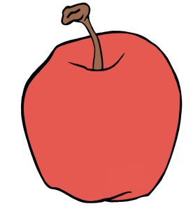

Chapter 5 - Apples and bananas
When is 5+5 not equal 10?
So 5+5 = 10 ... dah!
But it is also true that 5+5 = 2*5 ... OK, right?!
In math there usually many ways to write the same thing, so that it looks different but it means the same (syntax & semantics, like in chapter 1).
Sure sure, but when is 5+5 not the same as 10? How could I have five things and five things again, and when I put them all together they are not 10 things...? Too philosophical? Oops.
Let me find a concrete example. I can say "I have 5 fruits and other 5 fruits, so I have 10 fruits". Fine. But what if I have 5 apples and 5 bananas? What have I got? Ten... what? Ten fruits, OK, but that is neither apples nor bananas. I can I write this mathematically, to keep apples and bananas separated?
I can try like:
5 * apple + 5 * banana
and it could mean for example "5 times the weight of an apple and 5 times the weight of a banana". It is a linear combination (a mix of additions and multiplications) that two variables apple and banana as a way to keep two other numbers separated: 5 and 5 in this example.
You can also see the expression above as a weigthed sum, where apple and banana are the weights of 5 and 5, so that each 5 could have a different importance.
The idea is similar to the notation for writing numbers based on the abacus (chapter 1). Only that here I'm not interested in actually finding a single number summing up two quantities, and because of that I don't really care what are the values of the two variables apple and banana. I could write something like:
5 * 1000 + 5 * 1 = 5005
where i picked 1000 as the value for apple and 1 for banana, but how good is to have found 5005? You might say that it represents 5 apples and 5 banana in a nice, reversible way, and it does.
However, sometimes it is more interesting NOT to calculate something, keep it a bit longer, and see where that gets me. In chapter 4 for example we wanted to avoid calculationg too many divisions and we ended up inventing fractions. And here I want to think more in this way:
say that you have 2 kinds of fruits, apples and bananas. I want to put all the apples in a box, and all the bananas in another, or make an abacus with two spikes, one for apples and the other for bananas.
The difference with a usual abacus is that here I DON'T WANT to add them all up! Consider this: you go to buy one apple, but the shop only has bananas. How many banans should they offer you to replace that single apple you cannot buy? If you really just need an apple, no amount of bananas would do. In this situation
the word I'm looking for is incommensurable: there is no conversion rate between these two things. And that can happen, if you want to make an apple pie, good luck compensating apples with any amount of bananas!
Finally, this idea works also to keep separated more than two numbers, like in a recipe:
1 * egg + 3 * milk + 4 * flour
and again this has a meaning because you cannot replace milk with eggs.
Moral of the story so far: not only 5+5 can be "not 10" sometimes, but I can write it as:
5 * a + 5 * b
for some variables a and b (because writing apples and bananas EVERY TIME gets boring fast), and I don't have a particular value in mind for neither variables.
And this is why math uses letters as well as numbers.
Calculate it all, some, or not at all
What else can I do here, with this idea that 5+5 is not always 10?
I could see 5+5 as an example where I know that the two 5s are the same kind of things, therefore I can calculate the result, and I get 10.
Or I could have 5*a+5*b and then there is nothing more I can do. Maybe if I knew what were the values of a and b... otherwise stopping here is the best I can do.
And what about something like:
5 * a + 5 * b + 3 * a
which might mean "I have 5 apples and 5 bananas, and 3 more apples". Here I can at least put all apples in the same basket!
5 * a + 5 * b + 3 * a = (5 * a + 3 * a) + 5 * b
I would expect that 5 * a + 3 * a is simply (5+3)*a = 8*a because, after all, it means "I have 5 apples and also 3 apples", so I know I must have 8 apples in total.
But can I be sure that the math here says the same? Well... from the properties of
multiplication (chapter 2) I know:
(x*y + z*y) = (x+z)*y
for any numbers x, y and z. And here I can use this:
(5 * a + 3 * a) +
5 * b = (5+3) * a + 5 * b
= 8 * a + 5 * b
So I was right: I just have to add together all apples and all bananas. But can I do more than this?
Not in this case: this is the best I can do with this expression. So sometimes I can calculate all, until I get a number as a result, but in other cases the best I can do is put some stuff together, and clean up a bit the expression. And in some cases there is just nothing to do, for example with 8*a+5*b.
Wait... does this smell like a normal form or what?
Here we have expressions with variables a and b, and we can write the same expression in multiple ways (5*a+5*b+3*a or 8*a+5*b). And we find ourselves asking: what is the simplest way to write an expression with a and b? So simple that I cannot simplify it further?
Yes, that sounds just like the normal forms discussed in chapter 1; the normal form here would be that I put together as much as possible the amounts of as and bs, and possibly get my expression to a form like:
smtg * a + smtgElse * b
where smtg is a number (whole or broken, positive or negative, or a fraction if you like) and
smtgElse is a possibly different number. To bring the expression in this form, I might have to calculate something, perhaps remove brackets, and put together all the multiples of a and all the multiples of b.
When we discussed normal forms in chapter 1 we also talked about transformations: operations that change the look but not the meaning of the things we were working with.
Here we are working with expressions contaning as and bs, and we already know that a
possible transformation is to put together all as; so the rule should be:
smtg * a + smtgElse * a → (smtg + smtgElse) * a
Since we are talking about normal forms, we might even rewrite our two boxes with apples and bananas as a pair of numbers, so that 5 * a + 5 * b would look like
55, and when I add three more apples I get:
55 +
30 =
5+35 =
85
meaning "eight apples and five bananas", as we expected. Really, what we are doing here with a
and b is give names to the two boxes:
a8b5.
Using labeled boxes, I can write the addition above as:
a5b5
+
a3b0 =
a5+3b5
=
a8b5
So the general rule for adding linear combinations of apples and bananas is:
asomeAbsomeB
+
amoreAbmoreB =
asomeA+moreAbsomeB+moreB
where someA, someB, and moreA, moreB are numbers (of any kind we have encountered so far).
Good, so we have discovered how to add apples and bananas to other apples and bananas: you just add
apples to apples and bananas to bananas. Let's use this new addition rule on the expression (2*a+3*b) + (4*a+5*b). To calculate the result I should just drop the brackets, then re-grouping apples with apples and bananas with bananas:
2*a + 3*b + 4*a + 5*b = 2*a+4*a + 3*b+5*b =
(2+4)*a + (3+5)*b = 6*a + 8*b
or if you prefer our labeled boxes:
a2b3 +
a4b5 =
a2+4b3+5 =
a6b8
and that is the same result. Done.
As a final note: when the expression as only one apple (or banana) I can write a instead of 1*a, so for example: 1*a+3*b can be written simply as a+3*b.
Look at the fruits below: do they help visualizing the addition rule?

Interestingly, having introduced a new notation (the labeled boxes for apples and bananas), we end up with multiple ways to write the same meaning. For example, I can write "I have 2 apples and 3 bananas" in more than one way with labeled boxes:
a2b3 =
a2b0 +
a0b3 =
a1b0 +
a1b3 =
... =
a2 +
b3
and all these different notations mean the same thing: 2*a+3*b, and that is because of the addition rule.
Quadruple my fruits
At the end of chapter 1 we established that math is a language to talk about counting. Good. Here I want to talk count pairs of boxes (one of apples and the other of bananas). For example I might want to say that "I have 2 apples and 3 bananas (in my two boxes)" and you might add that you want to buy "four times the amount of apples and bananas in the boxes". How do I translate that into a math expression?
And how many apples and bananas is that?
Well I can translate that sentence into math one part at the time. First "I have 2 apples and 3 bananas" can be translated as 2*a+3*b. And then you want four times that amount, so:
( 2*a + 3*b ) * 4
and after I have done the multiplication by four, I would like a result that looks something like:
smtg * a + smtgElse * b or
asmtgbsmtgElse.
In this situation you want to buy four boxes, and so you will find yourself buying two apples times four, and three bananas times four: that gives you eight apples and twelve bananas, still separated in their two boxes. Therefore, you should expect the solution of our calculation to be:
8*a + 12*b
Right. But how do we proceed mathematically? I could argue that:
( 2*a + 3*b ) * 4 is the same as 2*a * 4 added to 3*b * 4, which gives:
2*4*a + 3*4*b = 8*a + 12*b
because you have to multiply the apples by four and separately the bananas by four too, then add them all up again.
Another way to say this is to consider that aNumber * 4 = aNumber + aNumber + aNumber + aNumber and here it means:
( 2*a + 3*b ) * 4 = (2*a+3*b) + (2*a+3*b) + (2*a+3*b) + (2*a+3*b)
and them I could just put apples with apples and bananas with bananas:
(2+2+2+2)*a + (3+3+3+3)*b = 8*a + 12*b
Wow, I get it: no matter what I do, I get the same result, so it must be correct, fine.
When I studied math, I was told many times that "math is precise"... I don't know about precise but surely it is consistent, even stubborn: (provided I do my calculations correctly) I find myself getting the same results, no matter what weird road I take to calculate.
Another way to look at it could be: math has been created to represent numbers and similar things, and those are just what they are. And math does such a good job at it that I can never find a way to trick it into coming up with inconsistent results. And historically, when it really does happen that some things come out different than expected thanks to some tricks, it usually brings on a new and more powerful kind of math.
Baskets of apples
I just conviced you (hopefully) that ( 2*a + 3*b ) * 4 = 2*4 * a + 3*4 * b.
But what if you wanted to buy an unspecified number of pairs of boxes, say k pairs of boxes?
You could expect this:
( 2*a + 3*b ) * k = 2*k * a + 3*k * b
and in fact it makes sense.
But how can an expression like 2*k*a + 3*k*b be a result? Isn't a result supposed to be an answer to some question? Something that has been completely calculated?
Simplified to the smallest, simplest form possible?
Well, in this case... that's it.
Later, when you will tell me what is the value of k, I will be able to quickly calculate the value of that expression. Again, the idea here is to calculate as much as I can, but stop if I cannot go any further, and more or less wait for the variables to be known.
An interesting thing happened in this expression: now I have k*a as a "new" variable.
But is it really "new"? Can I mix (add for example) 2*a and k*a? Or do I have to keep them separated? Let's see:
2*a + k*a = (2+k) * a
and this expression tells me: "I have two apples and I add a basket of apples. How many apples is that?", where the basket contains k apples in our case. You could reply: "that makes two-and-a-basket of apples".
So k cannot go away from my expression, and the expression cannot be simplified further, because I need to know something about k or a to calculate further.
The fact is that a and k*a are both variables that somehow are measured in apples, or count apples if you like; when I mix them in an expression, k will not go away in the result, which suggests that they are not the same KIND of numbers and I have to keep them separated as I try to calculate my expression.
On the other hand I can add apples to apples (for example 2*a+3*a = 5*a) and also k-apples to other k-apples (AKA add baskets of apples to same-size baskets of apples). For example:
2*k*a + 3*k*a = 2 * k*a + 3 * k*a = (2+3) * k*a = 5*k*a
and you could read this expression like: "I add two baskets of apples with three baskets of apples. How many apples is that?", and the answer can only be "five baskets of apples", provided that all the baskets had the same amount of apples (k in this example).
It's worth looking at this last calculation, (2*a+3*b)*k, using the labeled boxes notation:
a2b3 * k =
a2b3 *
k1 =
(a2 *
k1) +
(b3 *
k1) =
a*k2*1 +
(b3 *
k1) =
a*k2*1 +
b*k3*1 =
a*k2b*k3
OK, but how to read this? It should mean something like "I have two apples and 3 bananas", and "I want to get a basket of each", and by a basket I mean exaclty k fruits. How many apples and bananas will I have? The answer is "two k-apples and three k-bananas", or if you like "two baskets of apples and three baskets of bananas". And that is what a*k is, it is "one basket-load of apples".
I have been considering only addition and multiplication so far, but of course the same rules also work for subtraction and division:
5*a + 5*b - 3*a = (5-3) * a + 5 * b = 2*a + 5*b
( 2*a + 3*b ) : 4 = (2:4) * a + (3:4) * b =
12*a +
34*b
Add a few cherries...
Here we want to ask "I have two apples and three bananas, and I add four cherries. What is the result?".
In math terms I can write: 2*a + 3*b + 4*cherry =
?
It looks to me like we need to create a new box, specific for cherries, and then we can say:
"You will have two apples and three bananas... and four cherries", dah!
Another way to see this is to write the expression above using our labeled boxes:
a2b3 +
cherry4 =
a2b3cherry0 +
a0b0cherry4 =
a2b3cherry4
Can we do better than that? Not really. But it is important to see that we can extend our world from two boxes (or types of fruit) to as many as we need. And if you look at the rules we have defined so far, they are still valid. Even better: they automatically scale to this new situation with three boxes!
2*a + 3*b + 4*c + 2*c + 10*b = ?
( 2*a + 3*b + 4*c ) * 5 = ??
a2b3 = a2 + b3 = a2b3c0 = a2b3d0 = a2b3c0d0 = ... ect.
provived that c and d are NEW variables, AKA new boxes. So to specify the normal form for my labeled boxes, I will have to say explicilty that I should remove all the boxes with zero items in them. A situtation where I might need to remember this rule, could be a calculation like: 2*a + 3*b -2*a = 0*a + 3*b Clearly it would LOOK better to write it as 3*b instead, dropping the box with zero apples.
Fruit salads
Since I know that I can write k*a, what about a*a or a*b?
Would that make sense? And when would I need them?
To see what a*a and a*b actually mean, I will to go back and re-consider what multiplication actually is. Then I will be able to extend multiplication beyond numbers, to include variables and expression (AKA linear combination of variables and numbers).
Since this stuff is complicated, let's start as simple as possible.
When we defined multiplication (in chapter 2) we used tally numbers (or Peano numbers) and we were interested in find out how many Is was II * III. Spoiler: it is six. Fine, but... why? Or better: how do I know it is six (or IIIIII to be precise)?
Because, we said in chapter 2, multiplication is just repeated addition, so here we have:
II * III = III + III = IIIIII. But how do we know that we need TWO copies of III?
Oh, sure: it is because II has two Is. So really what we are doing is combine, mix the second number with the pieces of the first... Something like:
(the first) I -> III (the second) I -> IIIor if it helps to SEE it better, I could write it like:
/> I (the first digit of the second number)
(the first) I -> I (the second digit of the second number)
\> I (...)
+
/> I
(the second) I -> I
\> I
In both cases the total is six, so the multiplication still works as we expect.
And remember that with tally numbers we are just counting and all the Is are the same, they each mean "one sheep" or something like that.
Let me try to see even better who is composed with who in the intrepretation of the multiplication. To to that I can give a personality (a different look for example) to each I in both numbers. What I get is: II * III =
I with I and
I with I and
I with I and
I with I and
I with I and
I with I and surely it makes six, but six what? Six couples of Is. So... wait! What the multipication ACTUALLY does is to create all possible couples of Is in the two numbers being multiplied, and then count how many couples there are?! Only that usually all the Is are exaclty the same, so I never noticed, and simplify the story saying "II times III is IIIIII".
Personally I find this reveleation a bit mind blowing. But... can I use it here, with apples and bananas? Let's see.
Say that I want to multiply two apples by three bananas... and since I don't want to BREAK math, I still want six to come out as part of the result. But I also want more information about my apples and bananas. * =
( with , with , with ,
with , with , with =
6 * ( with ) OK... perhaps... but what does it mean?
Let me try to read the steps of the calculation:
"first apple combines with first banana",
"first apple combines with second banana",
"first apple combines with third banana",
"second apple combines with first banana",
"second apple combines with second banana",
"second apple combines with third banana"
Note: here I don't care if a couple is (apple,banana) or (banana,apple), and that means that "two apples multiplied by three bananas" gives the same result as "three bananas multiplied by two apples". Even "three apples by two bananas" gives the same result: "six (apple,banana) couples".
Now, I want to see how this looks in our labeled boxes notation: a2 * b3 = a*b2*3 where a*b stands for "a couple with an apple and a banana", or "apple-banana couple" for short. So I can say that "two apples multiplied by three bananas is six apple-banana couples".
A final question: "is an apple-banana couple the same kind of thing as an apple or a banana?" Or if you like: "could I add an apple-banana to an apple or to a banana? And what would be the result?". The situation can be represented like this: VS VS ( with ) which is also this, with labeled boxes:
a1 VS b2 VS a*b3
and in both cases it looks like an apple-banana couple cannot be an apple or a banana. Earlier we discovered that k*a is not the same kind of variable as a. After all a fruit salad is NOT an apple or a banana! Fruit salad multiplication
The great thing about this "fruit salad" approach to multiplication is that it mixes the fruits AND keeps them separated at the same time. In fact the answer to what is "two apples times three bananas" is not simply "six" but it is "six apple-banana couples", which keeps the information about where the six came from.
The other spectacular property of the "fruit salad" approach is that it works EXACLTY like the normal interpretation of multiplication, if we DROP the variables a and b. Take our example: (2*a)*(3*b) = 6*a*b, I can decide to get rid of a by replacing it with 1, and the same for b, and the equivalence should still be true: (2*1)*(3*1) = 6*1*1
2*3 = 6 and it is true!
Apples time apples
We still haven't looked at a*a. What would that be? Well, accoring to our "fruit salad" multiplication it should simply be: (1*a) * (1*a) = (1*1) * a*a = 1*a2 where a*a (AKA a2) is an apple-apple couple of fruits. And a*a is different from a, b*b and even a*b, because in a fruit salad, the kinds of fruits that your add to the mix, do count.
One last thing. What happens if we try a slightly more complex expression? For example: (2*a + 4*b) * (3*b) Well, this is just another case of the distributive property of the multiplication. Luckily we did not really alter the way multiplication works, even with our new "fruit salad" interepratation, so all the properties of the multiplication that we knew are still true, including this one!
I can distribute the multiplication across the addition, and get: (2*a + 4*b) * (3*b) = (2*a)*(3*b) + (4*b)*(3*b) and now each part can be calculated with our "fruit salad" rule for multiplication: (2*a)*(3*b) + (4*b)*(3*b) = 2*3*a*b + 4*3*b*b = 6 * a*b + 12 * b2 so we can even solve these weird-looking type of expressions.
The same calculation looks like this, when written with the labeled boxes:
(a2b4) * b3 = (a2 * b3) + (b4 * b3) =
a*b2*3 + b*b4*3 = a*b6 + b*b12
and both notations agree on the result: six apple-banana couples and twelve banana-banana couples.
Everything comes together
Finally, I can try to multiply two expressions, both containing a and b, for example:
(3*a+2*b) * (5*a+6*b)
How to proceed here? I can remember the distributive property of the multiplcation (from chapter 2), and PRETEND that (5*a+6*b) is just some number, do the distribution of the multiplcation, and then STOP PRETENDING, and put the bracket back in the expression!
What is get in this way is:
(3*a+2*b) * someNumber =
(3*a) * someNumber
+ (2*b) * someNumber =
(3*a) * (5*a+6*b)
+ (2*b) * (5*a+6*b)
This time however the two parts of my addition are not that simple (as in the previous example)... but they are NOT totally new either. Both (3*a) * (5*a+6*b) and (2*b) * (5*a+6*b) are multiplications with like the one I just solved (see previous paragraph), so I actually should know how to treat them. Let's see:
(3*a) * (5*a+6*b) + (2*b) * (5*a+6*b) =
(3*a)*(5*a)+(3*a)*(6*b) +
(2*b) * (5*a+6*b) =
(3*5*a*a)+(3*6*a*b) +
(2*b) * (5*a+6*b) =
3*5*a*a + 3*6*a*b +
(2*b)*(5*a)+(2*b)*(6*b) =
3*5*a*a + 3*6*a*b +
(2*5*b*a)+(2*6*b*b) =
3*5*a*a + 3*6*a*b +
2*5*b*a + 2*6*b*b =
15 * a*a + 18 * a*b + 10 * b*a + 12 * b*b
And now I can put together all the (a*a)s, the (b*b)s and the (a*b)s (which by the way is the same as b*a):
15 * a*a + 18 * a*b + 10 * b*a + 12 * b*b =
15 * a*a + (18 + 10) * a*b + 12 * b*b =
15 * a*a + 28 * a*b + 12 * b*b
= (3*a+2*b) * (5*a+6*b)
and that is all I can do, because a*a cannot be mixed with b*b, nor with a*b. Done.
Wow, that was along thing to figure out. But the important point is: it is entirely possible to multiply expressions together, and the result is another expression, with some new mix of variables.
The same calculation written using the labeled boxes, looks like this:
(a3b2)
*
(a5b6) =
(a3b2)
*
a5 +
(a3b2)
*
b6 =
a*a3*5b*a2*5
+
(a3b2)
*
b6 =
a*a15b*a10
+
a*b3*6b*b2*6 =
a*a15b*a10
+
a*b18b*b12 =
a*a15a*b10
+
a*b18b*b12 =
a*a15a*b10+18b*b12 =
a*a15a*b28b*b12
Moral of the story so far: linear combinations of variables can be treated as numerical expressions; we can add them, multipliy by a number or even multiply an entire linear combination by another.
Some of these operations give a result that has the same variables as the expressions that were involved in the calculation, but with different weights. In other cases we get new variables or multiplications of variables.
To understand what happens with variables and multiplication we can take a slightly weir interpretation of multiplication that takes into account not only the numbers but also the kind of things we multiply together. We called this approach "fruit salad", and it has the interesting side effect: it helps see why different kinds of fruit salad might not mix. For example a bowl with an apple and a banana is a different kind with respect to one with an orange and a pineapple. And even more interesting a bowl wit a banana is not the same kind as a bowl with an apple and a banana. The new interepretation of multiplication allows to keep the variables separated and at the same time combine them, that is to say "multiply them".
Finally, a principle seems to emerge from our fooling around with expressions: you can PRETEND that variables are numbers and calculate all that you can, using the usual rules for the operation. Of course sometimes you will have to stop the calculation because it will be impossible to reach a single-number result. So we have to accept that a result can be an expression sometimes, and not always a number.
In chapter 4 we worked with lazy, un-calculated divisions and called them fractions; here you might say that a variable is a lazy number, a number that will remain un-calculated, separated from others, only to be revealed later (perhaps, or not if we just wanted to keep things separated).
2 apples, 3 bananas and 5 florins on the floor,
3 bananas, 4 cherries,
2 apples, 3 bananas and 5 florins on the floor,
10 florins on the floor,
for each, test what happens in all four "And then" cases.
Now, try with: 3 apples and 2 bananas. What happens in the last of the "And then" cases?
Simpler and stranger cases
Now that we have a way to calculate a multiplication between two math expressions, both containing a and b, I would like to consider the special case:
(a+b)*(a+b)
where a+b is math shorthand for 1*a+1*b.
We can calculate this simply by using the rule we figured out in the previous section:
(a+b)*(a+b) =
(a+b)*a + (a+b)*b =
a*a + b*a + a*b + b*b =
a2 + 2*a*b + b2
Wait a second... This looks familiar. It is in fact the well known rule to calculate (a+b)2 that you might remember from school. Here we discovered it again using our rules for math expressions with variables... not bad.
Let me just write the rule using the labeled boxes, in case it becomes more easy to understand:
(a1b1)
2 =
a1b1
*
a1b1 =
(a1b1 *
a1)
+
(a1b1 *
b1)
=
(a*a1*1b*a1*1)
+
(a*b1*1b*b1*1)
=
a*a1a*b1+1b*b1 =
a*a1a*b2b*b1
Note: this expression will come up again in a completely different situation in chapter 7.
A more general case is the following expression where we want to multiply two additions; the expression contains four different variables:
(a+b)*(c+d) = ?
So what we want to find out here is what is the result of:
a1b1
*
c1d1
or if you prefer to go all the way back to our initial idea of boxes of fruits, you could read the expression as: "I have one apple in the apple-box and one banana in the banana-box, I want to combine them (multiply) with other two boxes, one with a cherry and the other with a date".
We could use the rule defined in the previous section, or... you might remember this rule from your school math. Whichever the case, we need to multiply each term in the first bracket with both terms in the second, and add the results; or something like this:
(a+b)*(c+d) =
(a+b)*c + (a+b)*d =
(a*c + b*c) + (a+b)*d =
(a*c + b*c) + (a*d + b*d) =
a*c + b*c + a*d + b*d
So I started with an apple, a banana, a cherry, and a date, and by composing them two-by-two in all possible ways (using our "fruit salad" multiplcation) I got four couples of fruits: apple-cherry couples, banana-cherry couples, apple-date couples, and banana-date cuples. They are all differnt kinds of fruits salads, so I cannot put the togheter: I have to stop my calculation here.
An interesting fact is that all of these calculations are valid in general; that means that for ANY four numbers that you might pick, it will be true that:
(a+b)*(c+d) = a*c + b*c + a*d + b*d
Let's try, just to get an idea how solid this equivalence is. If we pick a=1, b=2, c=3 and d=4 we should have:
(1+2)*(3+4) → 1*3 + 2*3 + 1*4 + 2*4 = 3+6+4+8 = 21
without even thinking about the fact that for instance (1+2) can be simplified to 3, I get this result automatically. But if did the calculation step-by-step, manually, I would get:
(1+2)*(3+4) = 3 * 7 = 21
... the same result. Right. Because math is stubborn. And here you clearly see that we are being lazy: we try to do the multiplication between the two brackets without even bothering to simplify the contents of the brackets first! And if you remember the calculation diagrams from chapter 4 you see just what I mean by lazy here.
|
|
To conclude, we have still to consider situations in which ordinary numbers are present in the expression, as in this example:
(a+b)*(c+5)
Could I simply use the rule we have for multiplication of fruit salads? Let's try, starting from distributing the multiplication:
(a+b)*(c+5) = (a+b)*c + (a+b)*5 = (a*c+b*c) + (a*5+b*5) =
a*c + b*c + a*5 + b*5
and that is all I can do. The calculation cannot go any further. But the result looks a bit odd, it is not in our usual normal form for these kinds of expressions. For example, we should write a*5 as 5*a because five is a constant number, while a is the variable, and we want to keep the format as: number*variable + otherNumber*otherVariable + ect.. Sometimes the "*" sign is dropped, and you could find the expression written like: number variable + otherNumber otherVariable + ect.. Or more concretly: 5a + 5b + ac + bc.
Also, terms with only one variable should be placed before those with two variables, and then those with three and so no.
And when possible the variables should be ordered alphabetically: so it is better to write b*c than c*b, and a should come before b and also before a*c.
So the best way to write a*c + b*c + a*5 + b*5 should be:
5*a + 5*b + a*c + b*c
A final note on terminology: linear combination of variables and numbers (AKA expressions with variables) are usually called polynomals in math (see wikipedia for an intro and more terminology). Polynomials as linear combinations of variables and numbers